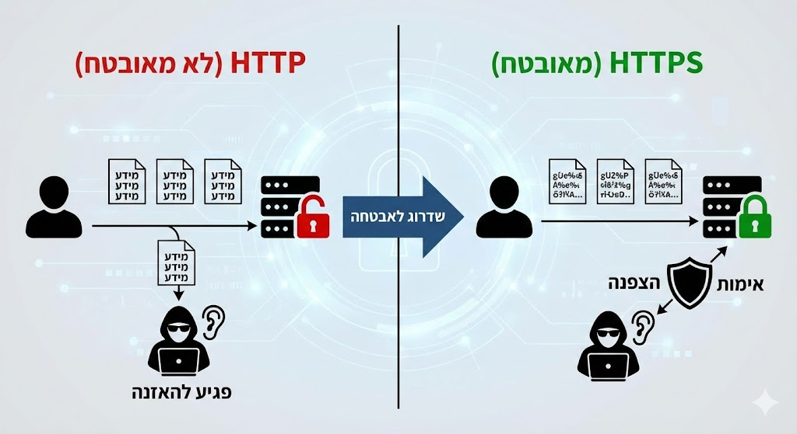
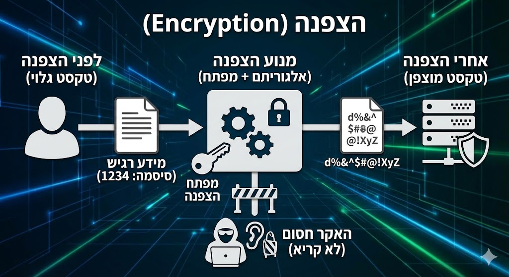
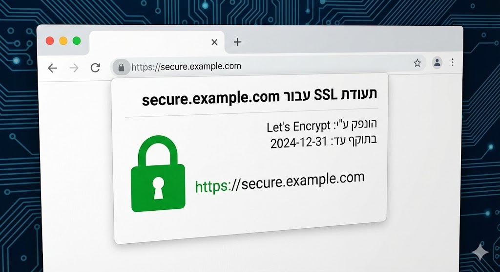

🛡️ מבוא לשרת HTTPS

שרת HTTPS (Hypertext Transfer Protocol Secure) הוא הסטנדרט המקובל והמחייב כיום להפעלת אתרי אינטרנט. עיקר תפקידו הוא לספק אבטחה לתקשורת בין הלקוח (הדפדפן) לשרת, על ידי הוספת שכבת הצפנה ואמצעי אימות.
יתרונות מרכזיים:
- אבטחת מידע קריטית: מונע האזנת סתר, יירוט ושינוי של הנתונים המועברים (כגון סיסמאות, פרטי אשראי, ומידע אישי) על ידי תוקפי Man-in-the-Middle.
- אמון משתמשים: הופך את האתר לאמין יותר בעיני המשתמשים, אשר רואים את סמל המנעול ליד כתובת האתר.
- שיפור SEO: מנועי חיפוש כמו גוגל מעניקים דירוג טוב יותר לאתרים מאובטחים ב-HTTPS.
- נדרש עבור תכונות מודרניות: תכונות רבות בדפדפנים מודרניים (כמו PWA's) דורשות חיבור מאובטח.
התקנה ותחזוקה דורשות תעודת SSL/TLS. בעבר הייתה השפעה על ביצועים, אך כיום עם חומרה מודרנית ופרוטוקול TLS 1.3 ההשפעה זניחה. חשוב לזכור כי האבטחה תלויה ביישום נכון ובהנפקה אמינה (CA).
💡 הסבר תיאורטי על HTTPS
HTTPS אינו פרוטוקול תקשורת נפרד, אלא שילוב של פרוטוקול HTTP הרגיל עם שכבת אבטחה קריפטוגרפית. שכבת האבטחה הזו היא כיום פרוטוקול TLS (Transport Layer Security), שהחליף את קודמו SSL (Secure Sockets Layer).
הפרויקט של HTTPS מתמקד ביצירת ערוץ תקשורת מאובטח המבטיח שלושה דברים עיקריים: הצפנה, אימות ושלמות הנתונים.
1. הצפנה (Encryption)
התקשורת כולה בין הלקוח לשרת מוצפנת, כך שגם אם צד שלישי יירט את הנתונים, הוא לא יוכל לקרוא אותם (הם יהיו חסרי משמעות).
תהליך לחיצת היד (TLS Handshake)
לפני העברת הנתונים בפועל, הלקוח והשרת מנהלים תהליך הידברות מורכב:
- מחליפים מידע על גרסאות TLS ואלגוריתמים קריפטוגרפיים נתמכים.
- משתמשים בקריפטוגרפיה א-סימטרית (מפתח ציבורי ופרטי) לשם החלפת מפתח סודי משותף (Session Key).
- לאחר החלפת המפתח, כל התקשורת בהמשך עוברת באמצעות קריפטוגרפיה סימטרית (שהיא מהירה יותר), תוך שימוש במפתח הסודי המשותף.
2. אימות (Authentication)
הלקוח מוודא שהוא אכן מתקשר עם השרת האמיתי של האתר (ולא עם מתחזה).
תעודת SSL/TLS
השרת שולח ללקוח תעודת SSL/TLS (Certificate), שהיא קובץ דיגיטלי המונפק על ידי גורם מאשר (Certificate Authority - CA) מהימן.
- התעודה מכילה את המפתח הציבורי של השרת, את שם הדומיין המאומת, ואת החתימה הדיגיטלית של ה-CA.
- הלקוח משתמש במפתחות הציבוריים של ה-CAs ששמורים אצלו מראש כדי לאמת את החתימה הדיגיטלית של התעודה, ובכך לוודא את זהות השרת.
3. שלמות הנתונים (Integrity)
עקרון זה מבטיח שהנתונים שהועברו לא שונו או שובשו במהלך המעבר מהלקוח לשרת או להיפך.
איך זה עובד? (Hash Function)
השרת (והלקוח) מצרפים לכל הודעה קוד אימות (Message Authentication Code - MAC) שנוצר באמצעות פונקציית גיבוב (Hash) המשתמשת במפתח הסודי המשותף.
הצד המקבל מחשב מחדש את קוד האימות של ההודעה ומכך מוודא שהוא תואם לקוד שצורף. אי-התאמה מעידה על כך שהנתונים שונו בדרך.